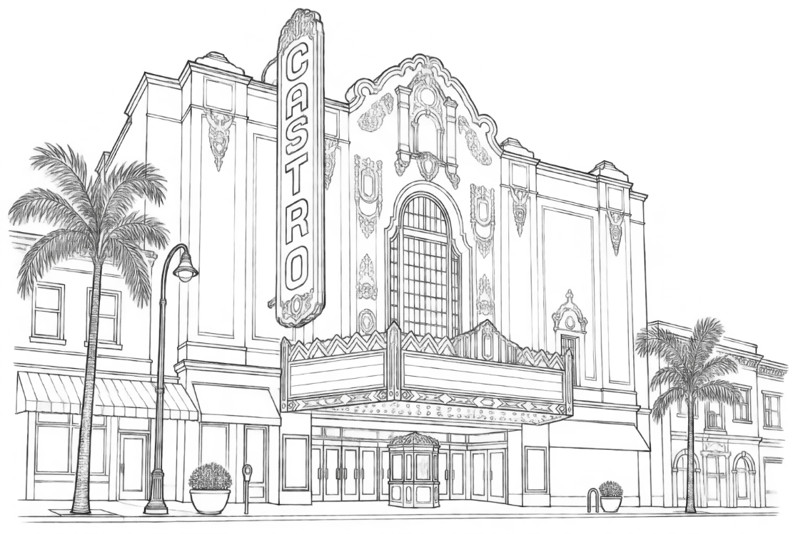
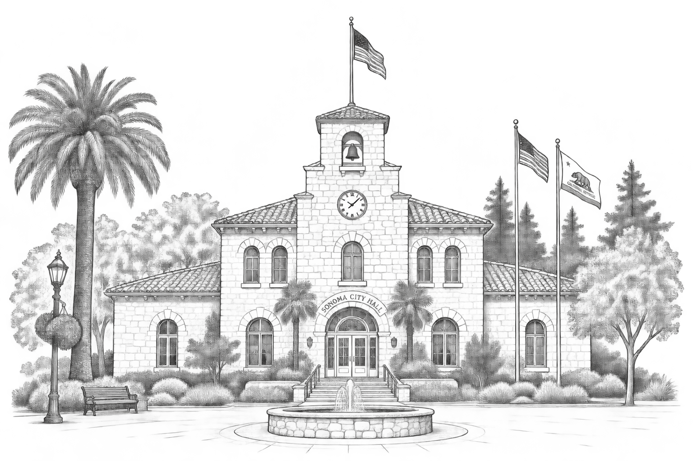

We love the Bay Area and Wine Country, and if you're making the trip out for our wedding, we hope you'll give yourself some time to explore.
These are some of our favorite places to stay, eat, and explore, not a comprehensive list, but a great place to start planning your itinerary from.
If you're flying into SFO, we highly recommend giving yourself some time in San Francisco before heading north. It's one of our favorite cities to explore, and there is a lot to see, so don't feel like you need to do it all.
Our new go-to favorite place to stay in the city. Part of Marriott's Luxury Collection, it gives you true historic San Francisco luxury in an amazing, central location.
One of Ashley's favorite hotels in the world, and our go-to for years before we switched to The Palace. Perched atop Nob Hill, the views are unmatched.
If Ashley could live anywhere, at any time, it would be the Haight in 1967. Wander the incredible vintage and independent boutiques, soak up the music history, and see the homes that made the neighborhood legendary — including Janis Joplin's former home (635 Ashbury St.) and The Grateful Dead House (710 Ashbury St.).
We think the best character and food in San Francisco is in the Mission — incredible restaurants, independent shops, colorful murals, and neighborhood energy. It's also where you can find amazing Burmese food, unique to the area; seek out Burma Love or Burma Superstar.
How could we not mention San Francisco's gayborhood? The historic Castro is home to LGBTQ+ history, queer-owned businesses, bars, restaurants, and plenty of San Francisco character.

It's not quite our 14th Street, but Union Square is incredibly centrally located and makes a great jumping-off point — close to major landmarks, shopping, the cable cars, and plenty of places to eat and drink.
Want to cross the bridge? Head over to Oakland and explore Temescal, one of the city's oldest and most vibrant neighborhoods, packed with independent shops and great restaurants.
Ride the Cable Car — Everyone knows Eli loves transportation, so this had to make the list. Head to the Powell & Market turnaround to watch the operators crank the cars around, then ride the line to Fisherman's Wharf.
The Presidio — Beautiful trails, incredible views, and a completely different feel from the rest of the city. It's also home to Lucasfilm, so keep an eye out for some Star Wars history.
The Painted Ladies — Head to Alamo Square to see San Francisco's famous Painted Ladies. Full House fans, this is your moment.
Ghirardelli Square — A classic San Francisco stop and a fun place to wander, particularly if you want something sweet.
SFMOMA — For the art lovers, SFMOMA is one of our favorite museums in the city.
Catch a Valkyries Game — If your trip lines up with a home WNBA game, go see the Golden State Valkyries at Chase Center. The energy is incredible.
The perfect first stop on the way to Wine Country. Want to travel like Ashley and Eli? Fly into SFO, pick up your rental car, and head north over the Golden Gate Bridge to Sausalito.
This beautiful little waterfront town is pure magic and, thanks to a great recommendation from Ashley's parents, has become a staple of our Bay Area visits. Park on the street or in one of the little lots around town, explore the shops, walk along the water, and grab a bite. Our go-to is Venice, our favorite sandwich shop — we like to grab sandwiches and sit outside overlooking the water.
The best part? Sausalito is roughly halfway between SFO and Sonoma, traffic dependent, an easy stop on your way north, or back to the city after you enjoy Wine Country.
While Napa and Sonoma are technically different valleys, we tend to think of the whole area as one big place to explore. Our biggest advice: don't try to do everything on one trip. Pick a few towns, plan a few great meals, do one or two must-dos, and leave room to wander.
The part of Wine Country that feels most like us — small-town feel, walkable downtown, and an entire afternoon spent wandering without much of a plan. Sonoma Plaza is the perfect place to start, and it's just a couple minutes from our wedding venue and host hotel.

Our favorite of the Napa Valley downtowns. Its historic Main Street is packed with locally owned boutiques, galleries, restaurants, and little places to pop in and explore.
Adorable, historic, and worth the detour — beautiful old buildings, independent boutiques, antique shops, and art galleries along the river. Feels a little less like traditional Wine Country.
A little more lively and urban than the other towns on this list. Walk along the river, browse First Street Napa, wander Oxbow Public Market, and don't miss Copperfield's Books, our favorite local bookstore.
We stayed here on our first Wine Country trip and think it is just magical — tiny, beautiful, and walkable, and home to The French Laundry. It's also where we took our hot air balloon ride.
A favorite for a casual breakfast or lunch. Perfect for a low-key morning before heading out for the day.
One of our favorite dinners in the area — cozy, relaxed, and centered around wood-fired cooking. It's about 10 minutes from Sonoma, so make a little adventure of it.
One of our Sonoma staples. A Sonoma classic and a great place to settle in for a meal right in the heart of town.
Also in Glen Ellen, owned by the same family behind The Girl & The Fig. If you love Girl & The Fig, put this one on your list too.
Delicious California-inspired food right at our host hotel, The Lodge at Sonoma. A perfect option if you want a great meal without ever leaving the property.
Our favorite meal we've ever had, by a lot. Located at the Four Seasons in Calistoga, this is a nearly 20-course tasting menu with Mexican and Japanese influences.
On the opposite end of the spectrum — casual, roadside, delicious tacos. Exactly the kind of place we love finding on a trip.
A Yountville classic for a proper French meal — and don't skip the bakery next door. Especially after a hot air balloon ride, come back down to earth and reward yourself with a croissant.
A beautiful, relaxed Wine Country setting. Ashley especially recommends brunch.
The food is fantastic, but honestly, the property is half the reason to go. Ashley especially recommends brunch.
One of our absolute favorite experiences. We flew with Napa Valley Aloft out of Yountville — you get up early, watch the valley wake up below you, and see Napa from a completely different perspective. We highly recommend it. And if you do it, go to Bouchon Bakery afterward for a croissant. Trust us.
A fun way to experience the valley without worrying about driving. The train runs through Napa Valley and offers different dining and tasting experiences.
You don't have to be staying there to enjoy the properties — check out Stanly Ranch, Four Seasons Napa Valley, Auberge du Soleil, and Carneros Resort and Spa.
We are probably not the people you want giving you a comprehensive list of wineries, as we're not big drinkers! That said, a few places have made an impression on us.
Incredible family owned and operated winery and Randy Siegel's favorite. Need we say more?
Our grandma Linda's favorite winery. It's women-owned and absolutely gorgeous, with beautiful gardens and a great setting for a tasting.
Many wineries are close to one another, so it's easy to build a day around a few stops. A lot allow same-day walk-ins, but most formal tastings require appointments. If you'd rather not handle the logistics, ask The Lodge at Sonoma or your hotel to help coordinate a wine tour.
Our Most Special Wine Experience — If you're looking for something truly special, we cannot recommend the private vineyard where we got engaged enough. Reach out to us and we'll connect you.
Don't try to see everything in one visit.
The best days are usually the ones where you leave a little room for serendipity. A great meal, a cute shop, a beautiful view, one extra glass, and nowhere you absolutely have to be.
Some of our favorite days in Wine Country have been the ones where we had the least planned.